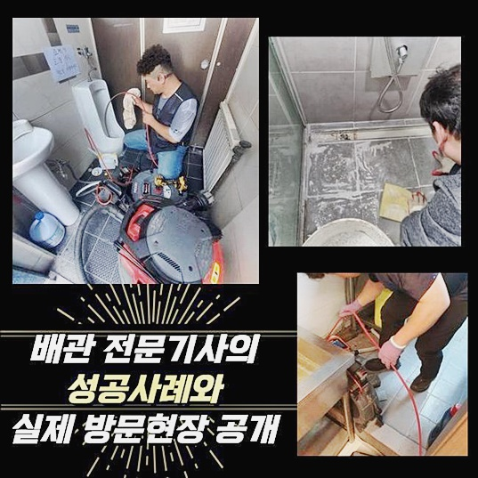
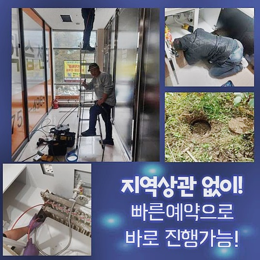
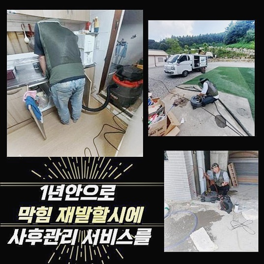
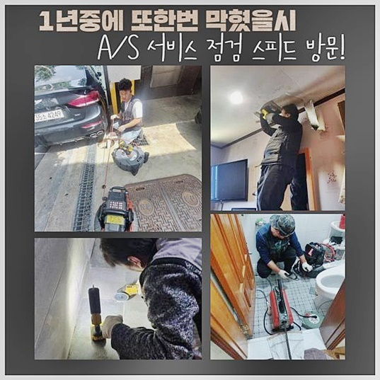
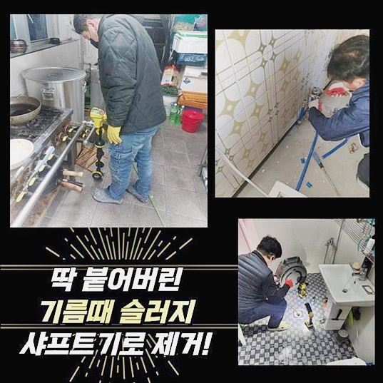
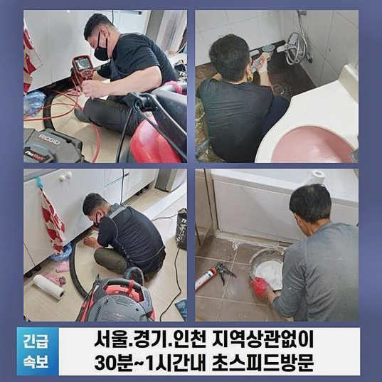

🏠 안양 안양동싱크대배수구막힘 집수정청소 해결방법
안양 싱크대막힘 전문 시공 후기

📋 작업 개요
- 위치: 안양
- 서비스 유형: 싱크대막힘, 하수구막힘, 배관막힘, 집수정막힘, 누수수리, 역류해결, 뚫는업체, 배관청소, 고압세척, 설비공사
- 작업 일시: 2024. 9. 26. 13:12
- 업체명: 하수구수사대 (010-5615-2118)
🔍 문제 상황
안양 안양동싱크대배수구막힘 집수정청소 해결방법
여러분들께서 예측하셨던것보다 여러장소에서 막히는문제가 생기고있어요
급작스레 막히게되어 곤란에 처하시기도해요
배관속에 오염물질이 쌓여있는지 육안만으로는 확인할수없어 갑자기생겼다고 생각하시는거랍니다
물넘침과 악취증상도 동반될경우 일상대로 지내기가어려워 조속히 전문인에게 의뢰하셔야해요
최근에 내방한곳으로 역류뿐만아니라 여러가지현상이 발현된 상태였습니다
욕실이나 주방은 빈번히 쓰기때문에 빠르게 개선해주는것이 좋겠죠
하수관에서 막힘징조가 느껴졌을때 지체하지않고 전문장비들을 사용하여 해결가능한곳에 문의해야합니다
하수구가 막히게되었을때 대대수의경우 자가조치를통하여 개선하려고 노력하시는데요
온수의물을 다량으로 붓거나 클리너용액들을 문제를 일으킨곳에 넣어서 해결하려고 하십니다
이런식으로 시도해봐도 쉽사리 해결되지않는 경우를 자주 보시는데요
되려시간이 지체되서 악화될수있기에 심화되기전에 조치해야합니다
오랜기간 누적된이물은 마트같은곳에서 구매할수있는 제품으로 개선하기 어렵답니다

🔎 원인 분석
💡 전문가 진단: 정밀 진단 장비를 사용하여 슬러지의 고착 여부를 판명하고 타격/세척 작업을 실시했습니다.
이러므로 하수도가 막히게되었다면 과도하게 건드리지말고 호출해주셔야 신속해결이 가능해요
현장으로내방해 어떤연유로 막힘이 발생하였는지 살펴보기로했죠
들여다본결과 화장실배수구가 막힌것을 확인했습니다
노후화된 아파트였고 시설점검을 받아보지 못했기에 잔해물질이 하수구속에 쌓여있는상황을 고려해보았죠
집구조살핀후 배수구쪽과 세면대쪽에서 물을흘려봤죠
배수상태가 느린상태로 흘러가고있는 상태였고 넘치는증세까지 발현되고있었죠
전체적으로 살펴봤더니 하수도에 문제가있다는걸 발견했어요
배관막힘발생시 중요한부분을 전달드리면 막힘문제를 내버려두지않는 것이죠
내버려두신다면 배관크랙이나 누수증세로 연결될확률이 높습니다
조그만한 손상이발현되도 심각한현상이 발생하는 배관이므로 다양한증세로 일어나기전 적극적인 대응이필요해요
막혀버린이유가 무엇인지 알아내기위해 하수구내부에 내시경도구를 넣게되었죠
내시경활용시 좋은점은 두눈으로 살필수없는곳에 발현한일까지 인지해낼수있어요
하수구깊은곳에 오염물이 쌓인것을 파악해냈답니다

🔧 작업 과정
이물질을 과도하게 제거하기보다는 클리너를 진입시켜 녹이기로했답니다
고착된이물을 약품을사용해 중화시키는걸 선택한것이죠
굳어있는 석회물질을 강압적으로 없애려고하면 손상문제로 연결될수있어요
약물투입후 배수관내부에 분쇄기구를 집어넣었어요
막힘증상이 발생했을때 많이쓰는 기계로는 흡입기구와 샤프트기구에요
분쇄장비의경우 강한압력을 통해 슬러지들을 분해시키기 좋아요
흡입장비는 청소기와비슷하게 흡입시켜 찌꺼기들을 제거시키는 도구에요
오염물의종류를 살피고 무슨기기를 사용할지 신중히 골라야합니다
작업상황마다 사용해야할 기기에 차이가일어나기 때문이랍니다
이번장소는 분쇄장비를 사용하면서 이물질들을 세밀하게 조각내었죠
누그러진 상태였기때문에 손쉬운방법으로 청소과정을 진행해볼수있었어요
남겨진오염물은 흡입기를통해 제거했답니다
잔해물이 제거가되며 신속히 개선되는것을 살필수있었어요
깨끗하게 제거하고자 반복적으로 스케일링과정을 진행했죠
하수관안에 오염물들이 쌓여있는 상황이다보니 작업이 마치기까지 오랜시간이 걸렸어요
좀만더늦게 요청했다면 파손문제로인해 큰공사로 연결될 가능성도 높았습니다
다양한과정이 진행되면 예상치못한 현상이 갑자기 일어나기도해요
곤란한상황에도 깔끔히대응해 해결하므로 작업이필요하다면 업체선정을 꼼꼼히하시길 바랄게요
스케일링을 끝내고나서 세척이 깔끔하게 완료되었는지 확인하고자 하수구카메라를 활용했습니다
배관내부 깊은곳을 상세히 알아봤더니 새배관처럼 되어있는것을 확인했답니다
하수구속에 잔해물질들이 진입되지않게끔 예방하기위해선 튼튼한상태의 하수구망을 설치해주시길 바랍니다


✅ 작업 완료
간헐적으로 하수구청소를 받아보시는것이 도움되실거에요
계속해서 오염물질이 쌓이며 발생하는만큼 자주관리해 하수구에 막힘증세가 일어나지않게 신경을써야해요
확실히 뚫렸는지 살피기위해 마무리로 배수상태가 정상적으로 돌아왔는지 확인했죠
물이깔끔하게 빠져나가는걸 보았습니다
문제증세를 모두해결후 정상적인 하수구상태로 되찾을수있었죠
방치하지말고 조속히 하수도관리를 받아보시는게 좋은방법이니 언제든 찾아주세요




⚠️ 베란다 누수 및 방수 관리 방법
- ✅ 비가 많이 올 때 창틀 주변이나 아래층 천장에 얼룩이 생기는지 정기적으로 확인해 보세요.
- ✅ 우수관 주변 실리콘 마감이 들뜨거나 깨진 틈새가 있는지 손상 여부를 수시로 체크하세요.
- ✅ 베란다 바닥 타일의 줄눈(메지)이 소실되면 그 틈으로 물이 침투하여 누수가 유발됩니다.
- ✅ 누수 의심 증상 발견 시 방치하면 아래층 손실이 커지므로 즉시 전문가의 진단을 받으십시오.
💡 핵심 정리
- 확실한 장비 작업(내시경 점검 및 샤프트 스케일링)으로 원인을 뿌리 뽑습니다.
- 작업 후 1년 이내에 동일한 부위 재발 시 100% 무상 A/S 서비스를 보장합니다.
- 서울 · 경기 · 인천 전 지역에 24시간 언제든 긴급 출동할 수 있도록 항시 대기 중입니다.
❓ 자주 묻는 질문 (FAQ)
🚨 안양 싱크대막힘 문제로 고민이신가요?
정확한 원인 진단과 확실한 시공으로 재발 없는 해결을 약속드립니다.
24시간 긴급 출동 | 서울 · 경기 · 인천 전지역 | 1년 내 재발 시 무상 A/S